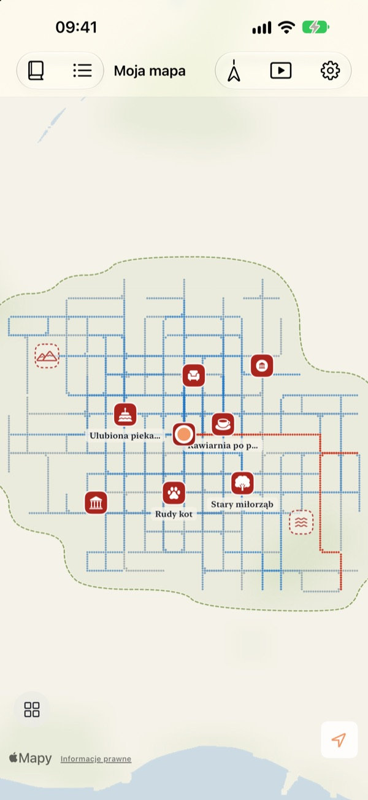
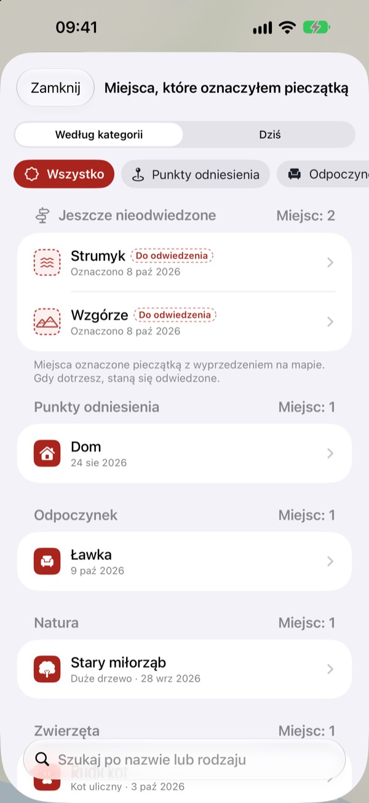
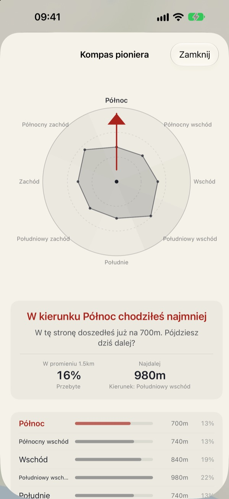
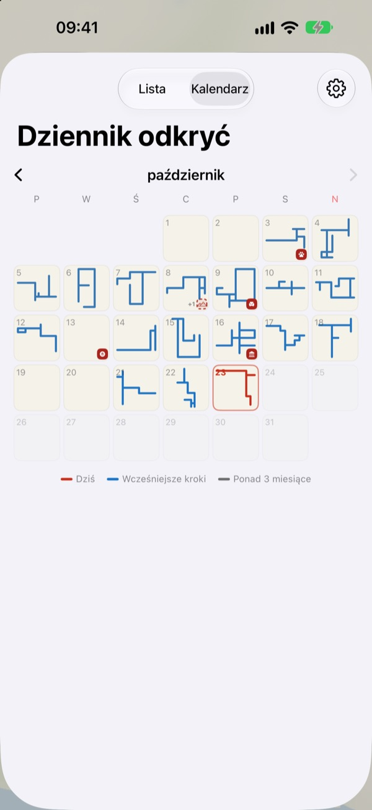

Mapa, która rośnie
tylko pod Twoimi stopami
Zaczyna się od pustej kartki. Wypełniają się tylko miejsca, które przejdziesz pieszo, punkt po punkcie, a ta sama ulica przemierzona sto razy jej nie poszerzy. Chcesz większej mapy? Wybierz nową drogę.
Wszystkie funkcje są bezpłatne i bez reklam.

Wybierz się na spacer
Przeciągnij palcem lub myszą po kartce, aby iść. Niebieskie punkty to ulice przebyte wcześniej. Zobacz, jak zmienia się Dzisiejsza droga, gdy wracasz po własnych śladach, a jak, gdy skręcasz w nowe miejsce.
Codziennie te same ulice?
Krokomierz liczy kroki, ale nie pyta, dokąd prowadziły. Droga z domu na stację i z powrotem wystarczy, by zamknąć pierścień, a boczna uliczka tuż obok latami pozostaje zagadką. Buktu Buktu liczy tylko drogi przebyte po raz pierwszy, więc dziś masz powód, by zboczyć o jedną przecznicę.
Pieczątki dla miejsc odwiedzonych i tych do odwiedzenia
Postaw pieczątkę tam, gdzie stoisz, albo przytrzymaj palec w dowolnym miejscu mapy. Do wyboru jest 212 pieczątek podzielonych na kategorie.
Pieczątka postawiona tam, dokąd Twoje kroki jeszcze nie dotarły, zostaje miejscem do odwiedzenia, a gdy naprawdę tam dojdziesz, staje się miejscem odwiedzonym. Sfotografuj szyld sklepu, a tło zostanie wycięte i szyld stanie w tym miejscu jak naklejka.

Następny spacer: kierunek, w którym bywasz najrzadziej
Kompas pioniera dzieli okolicę na osiem kierunków i wskazuje ten, w którym chodzisz najmniej.
Dzisiejsze ślady układają po kolei dzisiejsze postoje razem z dystansem przebytym między nimi.

Każdy dzień zostawia kształt
Kalendarz zamiast liczby pokazuje kształt każdego dziennego spaceru. Prowadź codzienny dziennik z tekstem i zdjęciami i sprawdzaj, ile z każdego spaceru było nowym terenem.
Wybierz okres i obejrzyj, jak rysuje się Twoja mapa, jako wideo do wyeksportowania.

Trzy kroki na start
- 1
Otwórz aplikację
Rozkłada się pusta kartka papieru.
- 2
Zezwól na lokalizację
Wybierz Zawsze i włącz Ruch i sprawność, aby spacery zapisywały się bez otwierania aplikacji.
- 3
Wyjdź z domu
Im mniej znana ulica, tym bardziej rośnie mapa.
Jak czytać mapę
- Czerwone punkty
- dzisiejsza trasa
- Punkty indygo
- wcześniejsze kroki, ciemniejsze tam, gdzie bywasz najczęściej
- Szare punkty
- miejsca, do których nie wracasz od ponad trzech miesięcy. Blakną, ale nigdy nie znikają
- Przerywana pieczątka
- miejsce do odwiedzenia. Gdy tam dotrzesz, staje się odwiedzone
- Drogi, które narysowałem
- łączna długość wszystkich dróg przebytych po raz pierwszy
- Dzisiejsza droga
- ile z dzisiejszego spaceru było nową drogą
- Pokaż wszystko razem
- w Ustawieniach; otwiera Kompas pioniera, Dzisiejsze ślady i film z rysowaniem mapy
Do wyboru: mapa tuszem albo Mapa rysunkowa.
Wszystkie funkcje za darmo
Za darmo
- Mapa wypełniana tylko tam, gdzie chodzisz, ze śledzeniem nowych dróg
- 212 pieczątek i naklejki z szyldów
- Kompas pioniera i Dzisiejsze ślady
- Kalendarz i dziennik z tekstem i zdjęciami
- Eksport wideo, na którym rysuje się Twoja mapa
- Widżety na ekran początkowy i ekran blokady
- Synchronizacja między urządzeniami przez iCloud
Wesprzyj twórcę
- Jeśli chcesz, wyślij drobny napiwek w Ustawieniach
- Napiwek niczego nie odblokowuje. Aplikacja działa tak samo
Bez reklam i bez subskrypcji.
Pytania
Po spacerze na mapie nic się nie pojawiło.
Wejdź w Ustawienia > Buktu Buktu > Lokalizacja, wybierz Zawsze i włącz Ruch i sprawność. Dzięki temu zapis działa nawet przy zamkniętej aplikacji. Jeśli w ustawieniach aplikacji wybrano tryb zapisu oszczędzający baterię, otwórz aplikację przed wyjściem. Lokalizacje o niskiej dokładności są zapisywane, ale nie rysowane.
Czy przejazdy autem lub metrem są zapisywane?
Nie. Na podstawie danych o ruchu i prędkości rysowane są tylko chód i bieg, a odcinki wyglądające na jazdę pojazdem są pomijane. Czasem aplikacja może się pomylić.
Codziennie chodzę tą samą trasą, a mapa nie rośnie.
Tak działa zasada. Wszystko w promieniu 30 m od przebytej już trasy liczy się jako ta sama droga, więc wartość „Drogi, które narysowałem” zwiększają tylko drogi przebyte po raz pierwszy. Chodnik po drugiej stronie ulicy też liczy się jako ta sama droga. Kompas pioniera pokazuje, gdzie chodzisz najmniej.
Czy moja lokalizacja jest gdzieś wysyłana?
Nie do twórcy. Kroki, pieczątki, dziennik i zdjęcia zostają na urządzeniu i w Twoim prywatnym iCloud, a twórca ich nie widzi. Anonimowe statystyki użycia nigdy nie zawierają współrzędnych, treści dziennika, nazw miejsc ani zdjęć. Do zamiany współrzędnych na nazwy miejsc używane są usługi Map Apple. Szczegóły znajdziesz w Polityce prywatności poniżej.
Czy zapisy przeniosą się na nowe urządzenie?
Tak. Zaloguj się na nowym urządzeniu na to samo Konto Apple i nie wyłączaj iCloud, a kroki, pieczątki, dziennik i zdjęcia przeniosą się razem z Tobą.
Jak usunąć pieczątkę lub zdjęcie?
Pieczątki usuniesz z listy Miejsca, które oznaczyłem pieczątką, a zdjęcie w dzienniku usuniesz, przytrzymując je palcem. Możliwość usunięcia wszystkich dróg i wpisów w dzienniku naraz jest w planach.
Jak dodać widżet?
Przytrzymaj palec na ekranie początkowym, stuknij Edycja > Dodaj widżet i wybierz Buktu Buktu. Na ekranie blokady przytrzymaj palec, a potem stuknij Dostosuj. Widżet na ekranie początkowym pokazuje kształt i długość dzisiejszej drogi, a na ekranie blokady dzisiejszy dystans.
Czego potrzebuję?
iPhone’a z iOS 17.0 lub nowszym.
Jak się skontaktować?
Wyślij opinię z ustawień aplikacji lub napisz na adres poniżej. Odpowiemy najszybciej, jak to możliwe.
Pytania lub uwagi? Napisz na leeo@kakao.com.